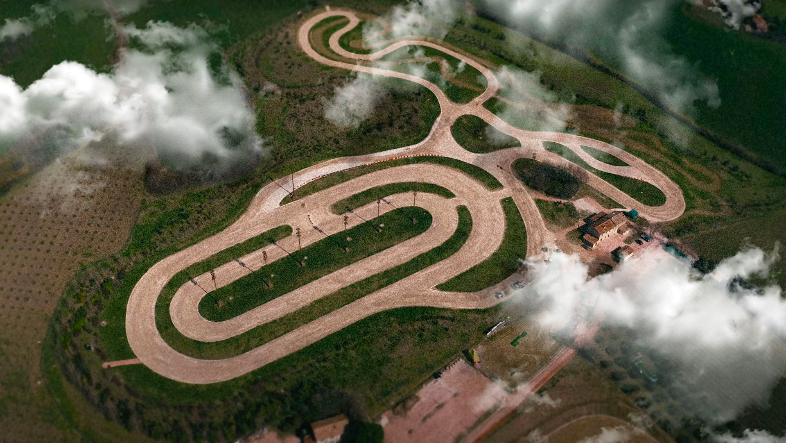

History
The VR46 Riders Academy was founded in 2013 with the goal of supporting Italian riders in
becoming
top level peformers
in motorsport, guiding them on their journey to the world of professional motorcycle riders.
Talent alone is not enough to succeed in motor sports: you need determination, sacrifice,
commitment
and…a mentor like
no other: Valentino Rossi.
Our riders are the interpreters of a project which is rooted in a land that lives and breathes
motor
sports, and
nourishes a mentality that is also an indissoluble lifestyle based on the values of friendship,
respect, loyalty and
hard work.
Regardless of the individuals, who adopt their method with different approaches, the principles
of
the Academy remain
firm and immutable.
The Motor Ranch
It was an afternoon like any other at “the Cava”, with the pleasant tiredness in the arms, and
the strong smell of tar
in everyone’s noses, carried by the September breeze among the gray warehouses. But the
afternoon snack ritual, a key
appointment after riders spent several hours on a motorbike making crossings on that track
half-beaten by the rollers,
coincided with the turning point for the group. With his suit unbuckled and a salami sandwich in
his hands, Valentino
resolutely tackled “the” question: “This place is too dangerous, we have to look for a real
track”. It was the start of
a new journey, in a place that soon became more than a racing track: the Motor Ranch.
70 hectares of uncontaminated nature on the Pesaro hills, which will be transformed in the ideal
motorcross track. The construction began immediately, with th design of a hypothetical path and
a tiller to make it real on the ground. After a few days of work Vale, Sic, and Paso, who wer in
charge of track approval, gave their green light.
